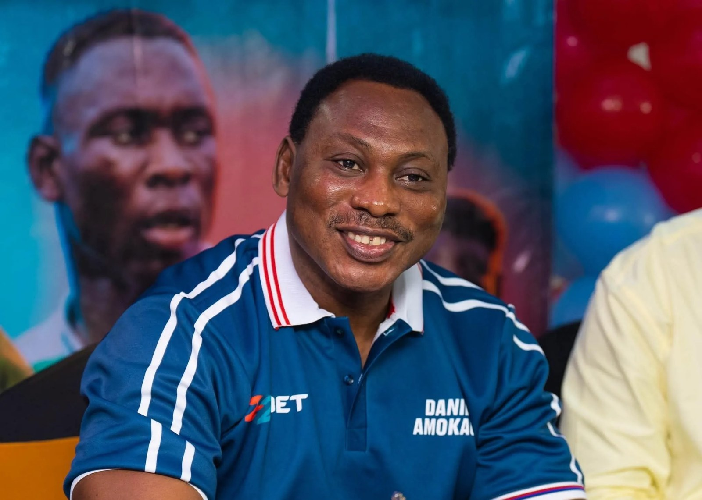

2027: Tinubu expands campaign visits to 19 states, FCT

President Bola Tinubu is set to attend 20 of the All Progressives Congress’s 37 presidential campaign rallies under a revised itinerary covering 19 states and the Federal Capital Territory. The campaign programme runs from October 2026 to January 2027, and the expanded plan marks a change from the original schedule, which listed 12 states for the president’s personal appearances.
The updated itinerary, released by APC National Publicity Secretary Felix Morka, includes Katsina, Taraba, Zamfara, Imo, Kwara and Abuja, among other locations. It also incorporates Akwa Ibom, Jigawa and Kebbi, where Tinubu has already attended rallies. His appearances included events in Uyo on 6 November, Port Harcourt on 7 November, Dutse on 10 November and Birnin Kebbi on 17 November; those visits were not part of his original personal itinerary.
Further scheduled appearances include Katsina on 2 December, Kano on 17 December and Jalingo on 19 December. Tinubu is also expected in Abuja on 21 December, Gusau on 28 December and Owerri on 30 December. His January visits are due to begin in Yola on 4 January 2027, followed by Sokoto on 5 January, Ilorin on 8 January, Asaba on 11 January and Lagos on 13 January. Kaduna, Plateau, Oyo, Borno and Enugu are also on the revised list.
The timetable changes several rally dates. Bauchi’s event has moved from 29 November to 1 December, with no indication that Tinubu will attend. Sokoto has shifted from 4 December to 5 January, Asaba from 12 December to 11 January, and Lagos from 9 January to 13 January.
The North-west has the largest regional representation on the itinerary, with seven states. The North-east and South-south each have three, while the North-central, South-west and South-east each have two. At the inauguration of the APC Presidential Campaign Council, Tinubu said he would not attend every rally because he did not want to abandon governance, but pledged to make time to engage Nigerians directly as party leaders campaigned across the country.
Source: Premium Times